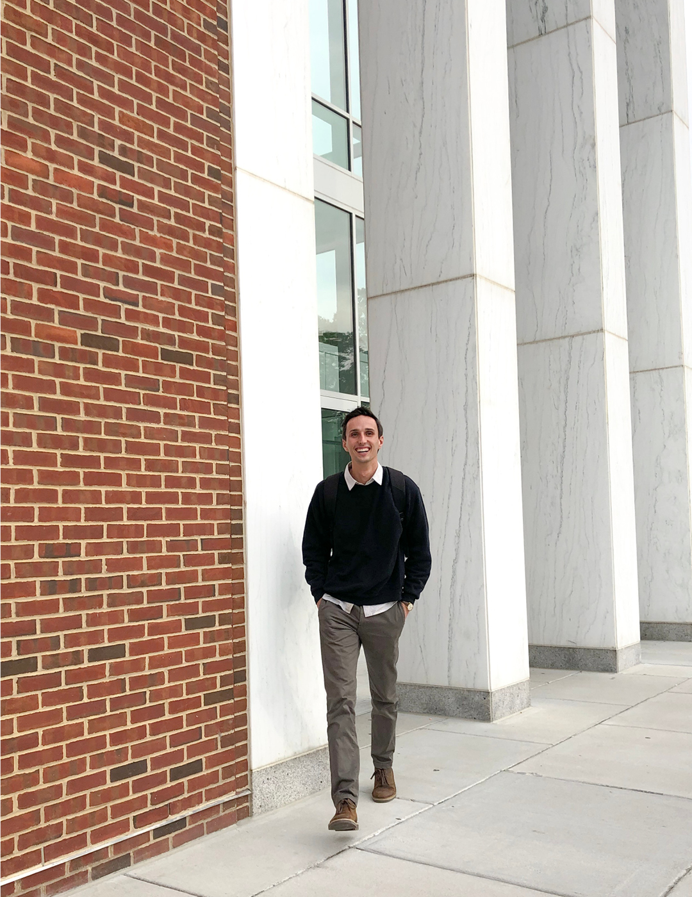

Summary
My name is Dawson Hoppes, and I am a Product Designer.
I am from Huntington Beach, CA, but currently live in D.C. while I pursue a masters degree in Human Computer Interaction from the University of Maryland.
In undergrad I studied Cinema and Media Arts which taught me a lot about communication, teamwork, self-expression, and storytelling.
My path to UX was a little abnormal, but has equipped and prepared me in unique ways to pursue a career in this field.
I grew up in Huntington Beach, and I love living in the beach cities. I was lucky enough at attend a small high school where we were given the space to try and experiment with a lot of different things.
I participated in events like band, volleyball, basketball, jazz band, puppet ministry, marching band, student council, school ambassadors, film club, sound team, California Scholastic Federation, woodshop, and a few others, but you get the point.
Through creating the film program at my school and serving as the Associated Student Body President I learned two very important things: I like creating, and I like people.
Why Design?
While studying film at Biola, I was able to try my hand at many different lines of work. I worked on multiple film sets, but I always found myself interested in the graphic and visual side of the medium.
I eventually found myself falling in love with graphic design and I started teaching myself, interning, and learning whatever I could. I decided to take this skill to the next level and I enrolled at a design school in Barcelona.
I lived, studied, and traveled there for five months and was able to grow so much. I took classes in architecture, product, graphic, and furniture design (a secret hobby of mine), and learned the importance of designing with empathy at the forefront of our thinking.
What's Next?
After my semester in Barcelona, I returned to Biola and was able to complete my senior thesis - Divide. I learned so much during that process and it pushed me to formally pursue HCI!
Being a film major showed me a different way to look at the world, and studying business showed me a lot about the way people interact with it. I have enjoyed meeting new people, serving as a Resident Advisor, and experiencing God in new ways throughout college. It goes by WAY too fast.
I am currently pursuing my Masters in Human Computer Interaction. My goal is to become a Product Designer and be able to use design principles to increase connection between people, products, and organizations.

Let's Talk!
I'm really loving graduate school, but I'm very excited for what is just around the corner.
If you want to collaborate our connect, send me an email or message me on social media. I'm excited to talk with you soon!